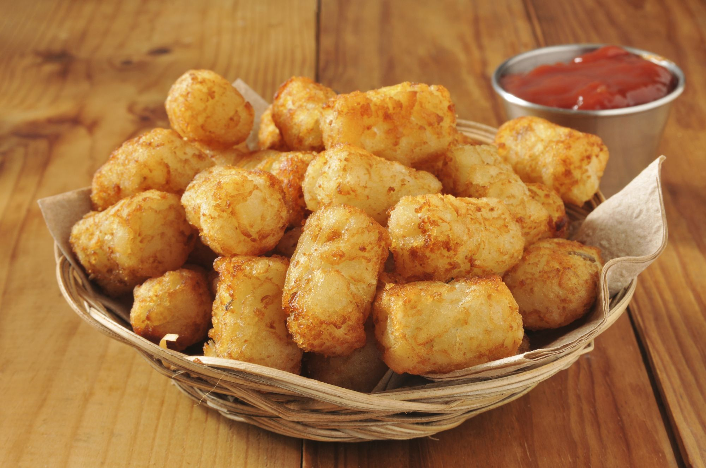
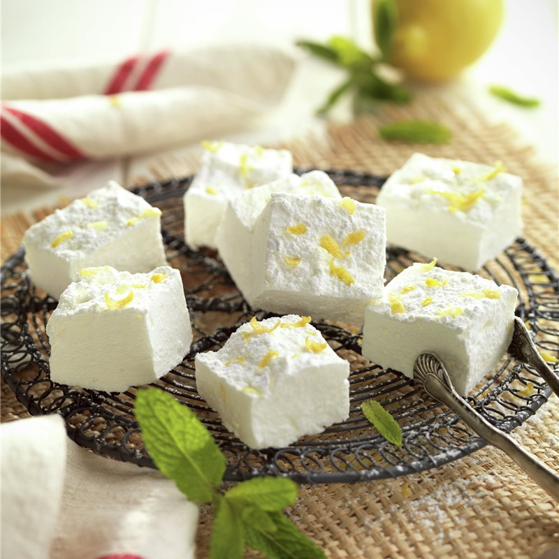

Croquetas de papa y roquefort (Entrada)
Las croquetas de papa y roquefort son deliciosas. Crocantes por fuera y suaves por dentro.
Matambres de pollo (Plato principal)
Este plato combinado y saludable, tiene sabor a verduras y un delicioso sabor a pollo.

Nubes de limon (Postre)
Estas nubes de limón (malvaviscos de limón) son muy fáciles de preparar, con ingredientes sencillos. Como resultado tendrás unas chuches deliciosas y naturales para los más pequeños o un capricho dulce para ti.